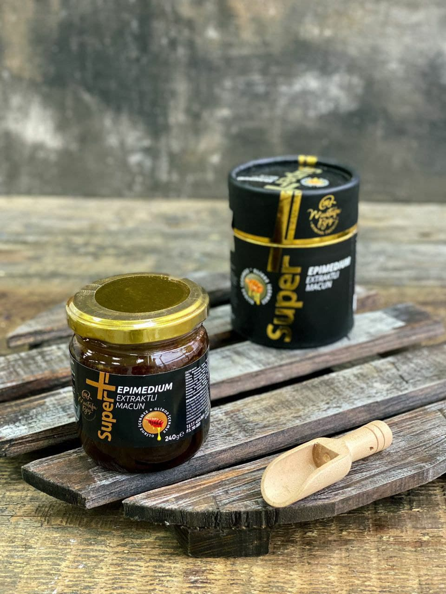

Discovery
مجموعة

معجون عشبي بالعسل
معجون العسل العشبي ليس له آثار جانبية معروفة. ثيم را
معجون عشبي بالعسل 43GR المنتج منتج عشبي وليس دواء.

معجون عشبي بالعسل
معجون العسل العشبي ليس له آثار جانبية معروفة. ثيم را
معجون عشبي بالعسل 43GR المنتج منتج عشبي وليس دواء.
المزيد من التفاصيل

معجون عشبي بالعسل
معجون العسل العشبي ليس له آثار جانبية معروفة. ثيم را
معجون عشبي بالعسل 43GR المنتج منتج عشبي وليس دواء.
المزيد من التفاصيل

معجون عشبي بالعسل
معجون العسل العشبي ليس له آثار جانبية معروفة. ثيم را
معجون عشبي بالعسل 43GR المنتج منتج عشبي وليس دواء.
المزيد من التفاصيل

معجون الابيميديوم
بدأ تعميم معاجين إبيمديوم بهذا المعجون ،
عندما قدمت نعمة العضوية في عام 2015 هذا المنتج لأول مرة إلى البيئة
المستهلكين الناطقين بالروسية.
المزيد من التفاصيل

معجون الابيميديوم "ممتاز"
لقد لبت الصيغة الجديدة للتكوين الآمال ، فيما تستطيع أنت بنفسك
تأكد،
للقيام بذلك ، اترك طلبًا على الموقع الإلكتروني لشراء ممتاز معجون الابيميديوم.
المزيد من التفاصيل

عجينة العسل بالقرفة
فعال في علاج فقر الدم ، ويحسن الشهية.
يطبيع الجهاز الهضمي. يحتوي على العديد من العناصر الغذائية.
المزيد من التفاصيل

باستا الزنجبيل
يقدم مصنع ثمرا هذا العرعر و
الزنجبيل المعتمد على العسل مع تركيبة غنية لأكثر من 40 مكونًا طبيعيًا صحيًا.
المزيد من التفاصيل

معجون السلطان إبيميديوم
معجون إبيمديوم ماجون بلس مثير للشهوة الجنسية هو أفضل علاج
مشرق و
حياة حميمة عاصفة ، فهي مناسبة ليس فقط للرجال ، ولكن أيضًا للنساء.
المزيد من التفاصيل

أصول تريبولوس ماتسون سبورت
معجون تريبولوس هو معزز طبيعي لهرمون التستوستيرون ،
الذي يحظى بشعبية لدى الرياضيين لأنه يحفز إنتاج هرمون التستوستيرون لدى الرجال.
المزيد من التفاصيل

معجون العسل مع سيراتونيا
من العقم كمية غير كافية
الحيوانات المنوية. مخالفات في الدورة الشهرية. لقوة الذكور وصحة الأنثى.
المزيد من التفاصيل

خليط العسل مع حبوب اللقاح
مناسبة للكبار والأطفال؛ مع سلس البول لتعزيز
الهيموغلوبين.
تحسن الشهية يزيد من مقاومة المرض.
المزيد من التفاصيل

عجينة العسل مع الجينسنغ
عندما تشدد. يقوي الذاكرة ، ويحسن العمل العقلي للرأس
الدماغ ، ويبطئ عملية الشيخوخة. مع انسداد الأوردة والأوعية القلبية. عند الرجال
يزيد
التستوستيرون.
المزيد من التفاصيل

مكرونة هيذر و الرمان
حارق طبيعي للدهون ، يقضي على الشهية ، ويخفف من الإمساك.
يسرع
الهضم ، يزيل السموم والغازات من الجسم. وهو مدر للبول ويقلل
مستوى
السكر يحرق الدهون.
المزيد من التفاصيل

عجينة العسل مع الجنكة بيلوبا
بسبب مواد خاصة استثنائية ، النبات
غير مألوف
توسع الأوعية الدموية ، مما يزيد بسهولة من مرونة جدران الأوعية الدموية.
المزيد من التفاصيل
مزيج من العسل مع غذاء ملكات النحل
لمناعة للأطفال والكبار ؛ للشهية مع العصاب و
كآبة؛ يسرع عملية التمثيل الغذائي. يحتوي على فيتامينات: A ، B ، B1-B12 ، C ، D ، E ، H ، P ،
PP. مناسب ل
البالغين والأطفال من سن مبكرة.
المزيد من التفاصيل

خليط العسل مع الأرضي شوكي
مع سمنة الكبد. يساعد في تقوية الجهاز الهضمي ،
في
القضاء على الأمراض التي تسببها اضطرابات التمثيل الغذائي في الجسم مثل النقرس -
مرض
الأنسجة والمفاصل ، والأمراض الناجمة عن ضعف وظائف الكبد ، مثل البقع على الجلد ،
الأكزيما ،
فطريات الجلد.
المزيد من التفاصيل

خليط العسل مع مومورديكا
مومورديكا نبات غريب له العديد من الأسماء.
شخص ما يناديه بالرمان الهندي ، شخص ما - البطيخ الصيني المر ، وشخص ما -
الكمثرى البلسمية أو حتى الخيار الأصفر ، ومع ذلك ، لا أحد يشك في الفوائد
الفاكهة. يتم استخدامه لالتهاب المعدة والقرحة.
المزيد من التفاصيل

خليط العسل مع بذور الجرملة
للإمساك والبواسير ، استخدم ملعقة صغيرة كل صباح ومساء
ملعقة.
لمرض الصدفية ، استخدم معجون الزنجبيل في الصباح على معدة فارغة وفي المساء قبل النوم.
واحد
ملعقة صغيرة.
قبل كل استخدام ، تأكد من تقليب المحتويات في البرطمان ، يوصى بذلك.
المزيد من التفاصيل
خلطة العسل مع القش
يحسن عمل الأمعاء والجهاز الهضمي ويزيل
إمساك.
حارق للدهون يعطي الشعور بالشبع والشبع لفقدان الوزن - 5 كيلو في الشهر. يزيل الغازات
من
المعدة والأمعاء ، له تأثير مدر للبول ، يعالج التهابات الكلى ويزيل السموم.
المزيد من التفاصيل

معلومات حول اللصق!
معجون عشبي بالعسل 2 ظرف
بنية: ثيم-را معجون عشبي بالعسل 43 غرام
من الخضار
منتج وليس دواء.
دواعي الإستعمال: لم يعرف معجون العسل العشبي
آثار جانبية.
معلومات حول اللصق!
معجون عشبي بالعسل 6 اكياس
بنية: ثيم-را معجون عشبي بالعسل 43 غرام
من الخضار
المنتج وليس الدواء
دواعي الإستعمال: لم يعرف معجون العسل العشبي
آثار جانبية.
معلومات حول اللصق!
معجون عشبي بالعسل 12 ظرف
بنية: ثيم-را معجون عشبي بالعسل 43 غرام
من الخضار
منتج وليس دواء.
دواعي الإستعمال: لم يعرف معجون العسل العشبي
آثار جانبية.
معلومات حول اللصق!
معجون عشبي بالعسل
بنية: ثيم-را معجون عشبي بالعسل 43 غرام
من الخضار
منتج وليس دواء..
دواعي الإستعمال: لم يعرف معجون العسل العشبي
آثار جانبية.